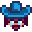
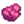

Quests
Quests are set objectives that provide rewards when completed. They're kept track of in the quest journal, which can be brought up by clicking the exclamation point icon at the bottom of the date/time display in the upper right of the screen, or by using the hotkey F. Current progress on a quest is shown under the exclamation point as items are collected. Quests are listed in the journal by title, and each quest can be expanded to read the text and requirements for completion. Clicking the X at the top of the window will close it and there's a button under the journal window to cancel the selected quest.
There are two major types of quests, story quests and Help Wanted quests. Story quests are typically received in the mail, but a few are automatically accepted at the beginning of the game to help teach the player about the game. Story quests can be completed at any time after receiving them; there is no time limit or expiration date.
Help Wanted Quests
Every day (except the first day of the game) the bulletin board outside Pierre's General Store may have a randomly generated Help Wanted quest that can be completed in exchange for money and sometimes increased friendship with the quest giver. When a new quest is available, the bulletin board will have a yellow exclamation point floating above it. Rewarded money depends on the number of items/monsters involved, the player's skills, and sometimes a bit of randomness. Once the player has accepted a Help Wanted quest they will have 2 days to complete it, the current day and the next.
If a daytime festival occurs during the 2-day period, it may not be possible to complete the quest on the festival day, since most shops and homes are "locked". See the Shop Schedules page for more information.
Achievements
There are 2 Achievements associating with completing Help Wanted Quests. Note that completing Special Order quests (both from Mr. Qi and in Pelican Town) count towards the required "Help Wanted" quests.
- Gofer (Complete 10 'Help Wanted' requests)
- A Big Help (Complete 40 'Help Wanted' requests)
Earning these achievements unlocks unique Hats at the Abandoned House in Cindersap Forest. In addition, the day after earning "Gofer", Lewis will send  500g in the mail. The day after earning "A Big Help", Lewis will send
500g in the mail. The day after earning "A Big Help", Lewis will send  2,500g in the mail.
2,500g in the mail.
Types
There are 5 types of Help Wanted quests that can be posted. There is no penalty for accepting a quest and then not completing it.
| Gathering | Clint will ask the player to collect copper, iron, or gold ores, usually 20-40, or coal for him to inspect, or Robin will ask the player to gather wood or stone.
Items must be collected after accepting the quest. Items stored in inventory or chests will not work. The requested items can be collected by purchasing them. It is not necessary to have the requested items in inventory to complete a gathering quest. Once the required number of items have been gathered (as indicated by the counter in the journal), talking to the villager who requested the items will complete the quest. |
| Slay Monsters | Requires access to the Mines.
Clint, Lewis, Demetrius, or the Wizard will ask the player to slay a random number of a specific monster. Once the required number of monsters have been slain (as indicated by the counter in the journal), talking to the villager who made the request will complete it. Note that a villager will never ask a player to slay a monster they do not have access to yet. For example, a quest to slay Shadow Shaman will never be asked until the player has reached at least floor 80 of The Mines. |
| Fishing | Demetrius or Willy will ask the player to catch from 1-5 of a specific fish from the current season, either to lower the population of that fish or to keep the art of fishing alive.
The reward is the base sell price of the fish × the number of fish requested, and the player gets to keep the fish. Note that it is not necessary to have the requested fish in inventory to complete a fishing quest. Once the required number of fish have been caught (as indicated by the counter in the journal), talking to the villager who made the request will complete it. |
| Saying 'Hello' | Emily will ask the player to talk to all the people living in the town. Talking to the Wizard, Krobus, the Dwarf, Sandy, Kent, and Leo does not count toward this quest. This quest will only appear after the "Introductions" quest is completed.
The player will gain 100 friendship points with everyone upon completion of this quest. Note that on day 2, the game does not display which villagers were greeted on day 1, but greeting the same villager twice over the 2-day quest does not count. |
| Item Delivery | This is the most common type of Help Wanted quest. Any adult villager that the player has met and can earn friendship with will ask for a random item for various reasons.
This item can be:
Villagers will reward the player with gold equivalent to three times the item's sell price in normal quality, which may make Item Delivery quests a more efficient method of earning money from items than shipping them. The player also earns 150 Friendship points with the requesting villager for completing the quest, with the exception of divorced spouses. To complete an Item Delivery quest, the player must hand the item to the requestor. Simply having the item in inventory when talking to them will not complete the quest. Note that completing an Item Delivery quest does not count as giving them a gift. Note: Jas, Vincent, Krobus, the Dwarf, and the player's spouse will never make Delivery requests. Sandy will make Delivery requests once the player has unlocked the Desert. If the player has not yet met a villager, that villager will not make any requests. The chances of an "Item Delivery" quest being available do not increase as the player meets more villagers. |
Prize Tickets
- Main article: Prize Ticket
On the top left of the Help Wanted board is a counter consisting of three stars. A star is obtained each time the player completes a quest. Once three stars are reached, the player will receive a Prize Ticket reward and the counter will reset. The board will indicate when the next quest will reward a Prize Ticket, but it is limited in terms of accuracy, because the player can have multiple quests active, and therefore may receive the Prize Ticket from completing a different quest. Tickets can be exchanged for prizes using the prize machine located in Lewis's house next to the Town Ledger.
List of Story Quests
In addition to quests posted on the "Help Wanted" board, there are several Story Quests unlocked during gameplay. There is no penalty for accepting a Story Quest involving item delivery and then deleting it from the player's journal without completing it. Story Quests do not count towards the "Gofer" or "A Big Help" Achievements.
Note that the game adds 255 Friendship points for quests that say "1 Friendship heart", rather than exactly 250 points.
| Quest Name | Quest Text | Provided By | Requirements | Rewards | ||
|---|---|---|---|---|---|---|
| Introductions | It would be a nice gesture to introduce yourself around town. Some people might be anxious to meet the new farmer. | Introductory quest | 28 people greeted. | 100 Friendship points (2/5 of a heart) with every known NPC | ||
| How to Win Friends | Giving gifts is a great way to build friendships. Learn each person's individual tastes and you'll be popular in no time. | Complete "Introductions" | Give anyone a gift. | |||
| Getting Started | If you want to become a farmer, you have to start with the basics. Use your hoe to till the soil, then use a seed packet on the tilled soil to sow a crop. Water every day until the crop is ready for harvest. | Package in room at start | Cultivate and harvest a parsnip. | |||
| If you want to become a farmer, you have to start with the basics. Feed your chickens each day by letting them eat grass outside, or by placing hay in their troughs. Once they are mature, harvest an egg! | Package in room at start (if picked Meadowlands Farm) | Harvest an egg from your chickens. | ||||
| To The Beach | Someone named Willy invited you to visit the beach south of town. He says he has something to give you. | Mail, Spring 2 | Visit the beach south of town before 5:00pm. | Bamboo Pole | ||
| Raising Animals | Robin, the local carpenter, lives north of town. In exchange for raw materials and money, she'll construct new buildings on your farm. You'll need her to build a coop or barn so that you can raise animals. | Complete "Getting Started" | Build a Coop. Note that this quest does not require the player to purchase animals. |
|||
| Feeding Animals | Robin, the local carpenter, lives north of town. In exchange for raw materials and money, she'll construct new buildings on your farm. If you build a silo, you can start harvesting your own grass with the scythe, and store it to feed your animals. | Complete "Getting Started" (if picked Meadowlands Farm) | Build a Silo. |
|||
| Advancement | As you gain experience you'll discover new crafting recipes to increase profit and make life easier. A Scarecrow, for example, will prevent crows from snacking on your precious crops. | Complete "Getting Started" | Reach Farming level 1 and craft a Scarecrow. | |||
| Explore The Mine | There's an old mine shaft in the mountains north of town. There could be valuable minerals inside, but Marlon hinted that it might be dangerous. | Enter the Mines. | Reach level 5 in the mines. | |||
| Deeper In The Mine | It seems that the mine elevator is still functional. It will allow you to quickly return to any elevator doors you've discovered. A deeper expedition might be in order. | Reach level 5 in the mines. | Reach level 40 in the mines. | |||
| To The Bottom? | So far, there's no sign of the bottom. How low does it go? | Reach floor 40 in the mines. | Reach the bottom of the mine. | |||
| Archaeology | Gunther asked if you'd consider donating any new artifacts or minerals you find to the museum. He says he'll compensate you by way of occasional rare goods. | Enter the Museum with a mineral or artifact in inventory. | Donate an item to the Museum. | |||
| Rat Problem | There's something odd going on in the Community Center... Investigate the Community Center. | Trigger the initial Community Center cutscene by entering Pelican Town from the Bus Stop between 8am and 1pm on a sunny day (Spring 5+) | Enter the Community Center and examine the Golden Scroll in the Crafts Room. | The following morning, a letter from the Wizard arrives in the mail, triggering the "Meet the Wizard" quest. | ||
| Meet The Wizard | You received a letter from the local wizard. He claims to have information regarding the old community center. | The morning after the player examines the first golden scroll in the Community Center, they receive a letter from the Wizard saying he has information. | Enter the wizard's tower. | The Wizard gives the player a potion that allows them to read the language of the Junimos. | ||
| Forging Ahead | If you're going to keep mining you should build a furnace. | Morning after collecting a Copper Ore, Clint visits and gives the player the Furnace blueprints. | Craft a Furnace. | |||
| Smelting | Now that you've built a furnace, you can smelt some metal. According to Clint's instructions, if you place 5 copper ore and 1 piece of coal in the furnace, it should produce a copper bar. | Complete "Forging Ahead". | Use the crafted furnace to smelt a copper bar. | |||
| Initiation | If you can slay 10 slimes, you'll have earned your place in the Adventurer's Guild. | Mailbox, morning after reaching floor 5 in the Mines. | 10 Slimes slain in the Mines, Secret Woods, or on the Farm. | Get to enter the Adventurer's Guild | ||
| Robin's Lost Axe | Robin lost her favorite axe. The last time she remembers using it, she was cutting wood south of Marnie's ranch. | Mail, Spring 11 | Find Robin's lost axe. Can be found near the Sewer Pipe in Cindersap Forest. | |||
| Jodi's Request | Jodi needs a fresh cauliflower for a recipe she's making. She's asking you to bring her one. | Mail, Spring 19 | Bring Jodi a Cauliflower. | |||
| Mayor's "Shorts" | Mayor Lewis has lost his purple "shorts". He's asking you to find and return them...Discreetly. | Mail, Summer 3 | Find and return Mayor Lewis' purple shorts. Can be found in Marnie's bedroom, or by placing a staircase inside Lewis' bedroom and following the path. | |||
| Blackberry Basket | It's blackberry season, but Linus can't find his basket! He's asking you to help him find it. He has no idea where it is. | Mail, Fall 8 | Find Linus' basket and return it to him. It's in the Backwoods near the entrance to the tunnel, which is to the left of the bus stop. | 1 Friendship heart | ||
| Marnie's Request | Marnie came by the farm and asked if you'd bring her a cave carrot. She's trying to train her goats to speak, and cave carrot is their favorite snack. | She visits the farm house after the player is at 3 Friendship hearts with her. | Bring a Cave Carrot into Marnie's shop. | 100 Friendship points | ||
| Pam Is Thirsty | Pam is hankerin' for a pale ale. Regular old beer won't do. You can brew one yourself if you have hops and a keg. | Mail, Summer 14 | Bring Pam a pale ale. | |||
| A Dark Reagent | The wizard wants you to descend into the mines and fetch him a Void Essence. He needs it for some kind of dark magic. | Mail, Winter 12 | Bring the Wizard a Void Essence. | |||
| Cow's Delight | Marnie wants to give her cows a special treat. She's asking for a single bunch of amaranth. | Mail, Fall 3 | Bring Marnie one bunch of Amaranth. | |||
| The Skull Key | You found a strange looking key in the bottom of the mines. | Reach the bottom floor of the Mines. | Discover the purpose of the Skull Key. | Access to the Skull Cavern in the Desert | ||
| Crop Research | Demetrius needs a fresh melon for his research. | Mail, Summer 20 | Bring Demetrius a melon. | |||
| Knee Therapy | George needs a hot pepper to soothe his aching knee. | Mail, Summer 25 | Bring George a hot pepper. | |||
| Robin's Request | Robin needs 10 pieces of Hardwood. | Mail, Winter 21 | Bring Robin 10 Hardwood. | |||
| Qi's Challenge | You've been challenged to reach level 25 in the skull cavern. You've been promised a substantial reward if you're successful. | Received by mail the day after entering the Skull Cavern. | Reach level 25 in the Skull Cavern. | |||
| The Mysterious Qi | Within a secret lock-box, you found a note with peculiar instructions. It's signed by a 'Mr. Qi'. | Put a Battery Pack in the lock-box in the tunnel next to the bus stop. | Leave a Rainbow Shell in the box at the train platform. | |||
| You found another note written by 'Mr. Qi'. The request is even more unusual this time. | Complete "The Mysterious Qi" first quest. | Place 10 beets inside Mayor Lewis' fridge. | ||||
| You've found yet another strange note within the Mayor's fridge. This time, the instructions are more cryptic. | Complete "The Mysterious Qi" second quest. | "Give the sand dragon his final meal." (Put a Solar Essence in the sand dragon's mouth at the Desert.) | ||||
| You found another note in the sand dragon's eye. It seems Mr. Qi's strange scavenger hunt has come to an end. | Complete "The Mysterious Qi" third quest. | Inspect the lumber pile beside the Farmhouse. | Club Card, which grants access to the Casino in the Oasis. | |||
| Carving Pumpkins | Caroline wants to carve a pumpkin with her daughter. She asked you to bring her one from the farm. | Mail, Fall 19 | Bring Caroline a pumpkin. | |||
| A Winter Mystery | You encountered a suspicious looking figure by the bus stop. When it saw you, it fled toward town. Could there be a clue to its whereabouts? | After triggering the cutscene by entering the Bus Stop from the Farm during Winter between 6am and 4pm. | Interact with the bush to the right of the playground in Pelican Town. | Magnifying Glass | ||
| Strange Note | You found a note, barely legible, asking you to bring "may-pal serrup" to the "seecrit wuds". | After reading Secret Note #23 | Enter the Secret Woods between 6am and 7pm with Maple Syrup in inventory to trigger a cutscene. | Bear's Knowledge | ||
| Cryptic Note | You found a note that reads, "Someone is waiting for you on level 100 in the Skull Cavern." | Reading Secret Note #10 | Reach level 100 in the Skull Cavern. | Mr. Qi awards the player with "iridium snake milk", which permanently increases the player's health by 25 points. | ||
| Fresh Fruit | Emily wants a taste of spring. She's asking for a fresh apricot. | Mail, Spring 6, Year 2 | Bring Emily an Apricot. | |||
| Aquatic Research | Demetrius is studying the toxin levels of the local pufferfish. He'd like you to bring him one. | Mail, Summer 6, Year 2 | Bring Demetrius a Pufferfish. | |||
| A Soldier's Star | Kent wants to give his wife a starfruit for their anniversary. | Mail, Summer 15, Year 2 | Bring Kent a starfruit. | |||
| Mayor's Need | Mayor Lewis wants truffle oil. He won't explain what it's for. Maybe it's none of your business. | Mail, Summer 21, Year 2 | Bring Lewis a bottle of Truffle Oil. | |||
| Wanted: Lobster | Gus put out a notice requesting a fresh lobster. | Mail, Fall 6, Year 2 | Bring Gus a Lobster. | |||
| Pam Needs Juice | Pam's TV remote is dead. She's having a tough time going back and forth between the couch and the TV dial. | Mail, Fall 19, Year 2 | Bring Pam a Battery Pack. | |||
| Fish Casserole | Jodi swung by the farm to ask you to dinner at 7:00 PM. Her only request was that you bring a Largemouth Bass for her fish casserole. | Event - Jodi at 4 Hearts; Exit the Farmhouse between 6am and 9:30am on a Monday to trigger the event. | Enter Jodi's house with a Largemouth Bass at 7:00 PM on any day after being invited (not a festival day). | Event Scene | ||
| Catch a Squid | Willy is challenging you to catch a squid. He says you can fish them from the ocean on winter nights. | Mail, Winter 2 | Bring Willy a Squid. | |||
| Fish Stew | Gus wants to make fish stew, but he needs an albacore. | Mail, Winter 26 | Bring Gus an Albacore. | |||
| Pierre's Notice | Pierre will pay "top coin" to whoever brings him a plate of sashimi. Apparently he's really craving the stuff. | Mail, Spring 21, Year 2 | Bring Pierre some Sashimi. | |||
| Clint's Attempt | Clint wants you to give Emily an amethyst. He wants you to tell her it's from him. | Mail, Winter 6 | Bring Emily an Amethyst. | 1 Friendship heart with Emily | ||
| A Favor For Clint | Clint got a new hammer and he wants to test it out on a variety of metals. | Mail, Winter 17 | Bring Clint an Iron Bar. | |||
| Staff of Power | The Wizard is creating a staff of phenomenal power. Who knows what it's for. He needs an iridium bar to finish it. | Mail, Winter 5, Year 2 | Bring Wizard an Iridium Bar. | |||
| Granny's Gift | Evelyn wants to surprise her husband with a gift. | Mail, Spring 15, Year 2 | Bring Evelyn a Leek. | |||
| Exotic Spirits | Gus wants to make a Coco-no-no, but he's missing the main ingredient. | Mail, Winter 19, Year 2 | Bring Gus a Coconut. | |||
| Catch a Lingcod | Willy is challenging you to catch a Lingcod. | Mail, Winter 13, Year 2 | Bring Willy a Lingcod. (Does not have to be caught after accepting the quest) | |||
| Dark Talisman | The Wizard asked me to retrieve the magic ink from his ex-wife's house... but to gain access I'll need a dark talisman. Enter the sewer and ask Krobus about the dark talisman. | Railroad cutscene (after completing Community Center or Joja Warehouse tasks & Completing A Winter Mystery Quest ). | Speak to Krobus and then venture through to the Mutant Bug Lair to retrieve the talisman. Return to the cave at the Railroad with it once it's collected. | Access to Witch's Swamp | ||
| Goblin Problem | There's a goblin blocking the path to the Witch's Hut. There must be some way to get him to move... Perhaps I should seek out more information on Goblins. | Through the cave by the Railroad after completing the Dark Talisman quest. | Speak to the Henchman outside the Witch's hut and give him Void Mayonnaise as a gift. Take the Magic Ink from the Witch's Hut and give it to the Wizard. | Wizard buildings available. Dark shrines now accessible in Witch's Hut. | ||
| The Pirate's Wife | An old lady living on Ginger Island is asking you to find a keepsake of her husband's. She gave you an old photograph of a soldier that washed up on shore, hoping it would help in some way. | Speak to Birdie | Find a keepsake that belonged to Birdie's husband.
|
|||
| The Giant Stump | The big tree to the south of my farm blew down. With 100 hardwood, I could turn the stump into something interesting... | Giant Stump in Cindersap Forest after the wind storm cutscene | Fix the giant stump with 100 Hardwood. | Access to Raccoon quests |
List of Quest Items
Quest Items are items that do not have any use outside of their intended quests, aside from occasional easter eggs.
They cannot be sold. If a quest item is lost, it can be retrieved from the lost & found box in Mayor Lewis' house.
| Image | Name | Description | Quest |
|---|---|---|---|
| Lost Axe | Robin's been looking everywhere for it. | Robin's Lost Axe | |
| Lucky Purple Shorts | Better not inspect these too closely. | Mayor's "Shorts" | |
| Berry Basket | The fibers are stained with berry juice. | Blackberry Basket | |
| War Memento | It's a faded photograph of a soldier... | The Pirate's Wife | |
| Gourmet Tomato Salt | A rare, delicious and savory salt. | The Pirate's Wife | |
| Stardew Valley Rose | A rose that reminds you of the valley. It smells heavenly. | The Pirate's Wife | |
| Advanced TV Remote | It has more buttons than a regular remote. Perfect for the avid TV watcher! | The Pirate's Wife | |
| Arctic Shard | This shard glows with an otherworldly blue light. | The Pirate's Wife | |
| Wriggling Worm | It's a wriggling, wet worm. | The Pirate's Wife | |
| Pirate's Locket | It's an old pirate's keepsake. | The Pirate's Wife |
List of Special Orders
During a cutscene that is available starting on Fall 2, Year 1, regardless of the weather, a special orders board is installed in front of the Mayor's Manor. This board has larger orders that would not be normally found on the Help Wanted board. Unlike Help Wanted requests, these orders are automatically filled without speaking to the requestor. Additionally, the special orders cannot be cancelled from the individual player quest listing, and time must be allowed to run out. Unless specified, the resources needed for special orders must be collected after the special order has been accepted. On orders that require the player to place items in a container, resources collected before the quest was accepted may be placed in said container, however, new resources must still be obtained. For example, 24 pre-acquired eggs may be placed in the Saloon fridge, but 24 more eggs must still be harvested afterwards to complete the order.
New special orders become available on Monday. The maximum timeframe for a special order, if it is accepted on the day it is posted, varies from 7 to 28 days, depending on the special order. However, the allotted time for a special order decreases every day regardless of whether it has been accepted by the player or not. Hence, if the player starts a special order with a maximum timeframe of 7 days on Wednesday, the time given for completion will only be 5 days. If the player starts a special order with a maximum timeframe of 28 days on the 15th day of a month, they will be given only 14 days to complete the order. The table below indicates maximum timeframes.
A new special order can be accepted each week, even if another one is still ongoing; multiple special orders can be active at the same time.
When doing a special order that requires shipping items, the player can ship the remaining items on the final day. The progress bar only tracks items shipped on previous days and this can create the impression that items shipped need to be shipped before the last day, but they do not.
The table below states whether special orders are repeatable after having been successfully completed. All special orders will show up again if attempted and failed.
If the player partially completes a special order but ultimately fails, the donated goods can be picked up in the Lost and Found box in the Mayor's house.
After completing a special order, the player can collect a Prize Ticket from the box next to the special order board. Special orders that have been completed will display a checkmark below the timeframe if they show up on the board again, allowing players to see what orders they have already fulfilled.
| Quest Name | Quest Text | Provided By | Prerequisites | Maximum Timeframe | Requirements | Rewards | Repeatable | ||
|---|---|---|---|---|---|---|---|---|---|
| Island Ingredients | I want to experiment with tropical cooking, but it's hard to find any ingredients. If someone could ship 100 (Taro Root / Ginger / Pineapple), it might help! | Ginger Island unlocked | 28 days | Harvest, then ship 100 of one of the following:
Crops must be harvested while quest is active. Ginger dropped by Tiger Slimes counts toward the total.
|
|
Yes | |||
| Cave Patrol | The number of [Monster] in the local caves have made mining dangerous... for other people, not me! There's good money for anyone willing to slay 50 of them. -Clint | None | 7 days | Slay 50 of one of the following: |
|
Yes | |||
| Aquatic Overpopulation | For unknown reasons, the local population of [Fish] has grown to an unsustainable level. I need a local angler to help reduce their numbers. | None | 7 days | Catch 10 of one of the following (depending on the season):
Tip: Using Targeted Bait for the specific fish can significantly reduce the amount of time needed to complete this quest. |
|
Yes | |||
| Biome Balance | For unknown reasons, the local population of [Fish] has grown to an unsustainable level. I need a local angler to help reduce their numbers. | None | 7 days | Catch 20 of one of the following: |
|
Yes | |||
| Rock Rejuvenation | Hey! I'm going to invite some friends over to do a "rock rejuvenation" ceremony, but I'll need some crystals to channel the right energies. Do you think you could lend me a hand? | Have access to the Sewing Machine in Emily's House | 7 days |
Deliver to Emily all of the following: Can be collected before accepting the special order |
|
No | |||
| Gifts for George | George thinks no one in town cares about him. I'd like to prove him wrong! A dozen leeks should do the trick... they're his favorite. -Evelyn | Spring | 28 days |
Collect, then place onto Evelyn's stove:
Items must be collected while quest is active. Leeks grown and harvested from Spring Seeds count toward this quest. |
|
No | |||
| Fragments of the past | Calling all amateur paleontologists! I need 100 pieces of bone for my studies. Please drop them off at the museum counter! -Gunther |  Gunther |
None | 7 days |
Collect 100 of any combination of bone items, then dump in the box in the Museum
Items must be collected while quest is active. |
|
No | ||
| Gus' Famous Omelet | I've got the urge to make my famous giant omelet... but I'll need two dozen eggs. Any takers? | None | 14 days |
Collect, then place into the fridge of the Stardrop Saloon:
Eggs can be from any animal (e.g., chicken, duck, dinosaur). Chicken eggs can be of any size and color. |
|
Yes | |||
| Crop Order | [Crop] are in high demand this year. Anyone who ships 100 [Crop] by the end of the season will earn a substantial reward from the Pelican Town Agricultural Fund. | Not Winter | 28 days |
Harvest, then ship 100 of one of the following (depending on the season):
Crops must be harvested while quest is active. |
|
Yes | |||
| Community Cleanup | I have an idea. There's a lot of trash in the water. Why don't we fish some out to make the valley more beautiful? -Linus | None | 7 days | Gather, then dump in the bin at the train platform:
Gathering counter works with Crab Pots, Garbage Cans, and trash caught by Fishing. |
|
No | |||
| The Strong Stuff | Heard there's a spirit made out of potatoes that really packs a whallop, if you know what I mean. Mind dropping a few taters into a keg and bringing me a batch or two? | Spring | 14 days | Collect, then place in Pam's kitchen:
Juice must be collected from Keg while quest is active. |
|
No | |||
| Pierre's Prime Produce | Hello there. For an upcoming promotion, I'm thinking of offering some high-quality vegetables at a slight premium...Know where a thrifty shopkeep might find 25 gold-star vegetables? | None | 28 days |
Harvest, then dump in the bin in Pierre's General Store:
Items must be harvested while the quest is active. Iridium quality vegetables do not count. |
|
No | |||
| Robin's Project | Hey! I have an idea for a new style of bed, but I'll need 80 hardwood to make it happen. Can anyone help? -Robin | None | 7 days | Collect:
|
|
No | |||
| Robin's Resource Rush | I'm putting on a little promotion, just for fun. If anyone can collect 1000 pieces of [Resource] in a week, they'll earn a reward. And you can keep the [Resource]! -Robin | None | 7 days | Collect 1000 of:
Can be purchased from Robin's shop. Wood obtained from a Wood Chipper counts. |
|
Yes | |||
| Juicy Bugs Wanted! | Hey there, I'm looking for a big wad o' bug guts. The juicier the better... at least that's what the crabs seem to like... 100 pieces should do the trick. | None | 7 days |
Collect, then dump in the bin next to the fish shop:
 |
|
No | |||
| Tropical Fish | There's nothin' like tropical fishing... To keep the art alive, I'm offering a reward for whoever can bring in a good island haul. | Ginger Island unlocked, Island Resort built | 7 days |
|
|
No | |||
| A Curious Substance | I seek an extremely rare and powerful goop, known as 'ectoplasm'. It can be found in the remains of slain ghosts. -M. Rasmodius | None | 7 days | Ectoplasm (1) |
|
No | |||
| Prismatic Jelly | I require assistance in tracking down the rare and dangerous prismatic slime, within the local caves. Bring me a jar of its prismatic jelly and you will be duly rewarded. -M. Rasmodius | None | 7 days | Prismatic Jelly (1) |
|
No |
List of Mr. Qi's Special Orders
On Ginger Island, after reaching 100 Golden Walnuts, is Mr. Qi's room. Inside, he provides a special order board similar to the one in town, which refreshes with two new quests to choose from every Monday. Quests will repeat over time, regardless of whether they have been successfully fulfilled in the past.
| Quest Name | Quest Text | Maximum Timeframe | Requirements | Rewards | ||
|---|---|---|---|---|---|---|
| Qi's Crop | I've hidden Qi Beans throughout the world. Find them, grow them, propagate them, and ship 500 Qi Fruit within the time limit. | 28 days | Ship Ship using the Shipping Bin for credit. Selling to Pierre does not count.
|
|||
| Let's Play A Game | Think you can score 50,000 points in Junimo Kart endless mode? Prove it. | 7 days | Score 50,000 points in Junimo Kart endless mode. | |||
| Four Precious Stones | Find 4 prismatic shards. Place them in my collection box. | 28 days | Collect Items must be collected while quest is active. |
|||
| Qi's Hungry Challenge | Your task is to make it to level 100 in the Skull Cavern. However, you can't eat or drink anything while there. | 7 days | Reach floor 100 of the Skull Cavern without consuming any food or drink items. This can be done using Staircases.
While this quest is active, Big Slimes will occasionally spawn with a heart in them that will recover 10 HP when dropped. This doubles to 20 HP if the player has the Burglar's Ring. Another way to regain health during the quest is to use equipment with passive healing bonuses, such as the Vampire Ring, the Fairy Box, or a weapon with the Vampiric enchantment. Buffs from food or drinks consumed before entering the cavern stay active for their normal duration. |
|||
| Qi's Cuisine | Ship 100,000g worth of freshly cooked items. | 14 days | Ship
|
|||
| Qi's Kindness | Give 50 loved gifts in one week. | 7 days | Give 50 loved gifts in one week. One gift can be given to each villager per day (a total of two gifts per week, per villager), and there are a total of 34 giftable villagers. Therefore, this quest can be completed in at least two days by gifting all 34 villagers on the first day, then 16 villagers the next day for a total of 50 gifts.
Stardrop Tea does not count for this quest. |
|||
| Extended Family | Family members of the legendary fish have returned to the valley. You have three days to catch Ms. Angler, Glacierfish Jr., Son of Crimsonfish, Radioactive Carp, and Legend II. | 3 days | Catch Ms. Angler, Glacierfish Jr., Son of Crimsonfish, Radioactive Carp, and Legend II. They can be caught in the same locations as the older generation of fish but the fishing bar is not distinctly marked as it is with the original legendary fish. It does not have to be raining for Legend II to appear, as the original Legend.
The same level requirements for the original legendary fish apply for these fish as well. This means that it is impossible to complete this quest without either reaching fishing level 10 or getting there temporarily via Buffs, as that is the level requirement necessary to hook a Legend II, as with the original Legend. |
|||
| Danger In The Deep | The mine elevator system has been reset, and new dangers have emerged from deep underground. Make it to the bottom of the mines in one week. | 7 days | Reach the bottom of the Mines in the Mountains. This can be done using Staircases.
This quest will also reset unlocked purchasable gear from the Adventurer's Guild. |
|||
| Skull Cavern Invasion | The Skull Cavern has been invaded by powerful monsters. Make it to level 100 in one piece. | 7 days | Make it to floor 100 of the Skull Cavern. This can be done using Staircases. | |||
| Qi's Prismatic Grange | Find 100 each of red, orange, yellow, green, blue, and purple items. Place them in my collection box. | 14 days | Place 100 x red, 100 x orange, 100 x yellow, 100 x green, 100 x blue, and 100 x purple items into Qi's collection box.
This quest is more strict than dye pots are. For a list of eligible items, see the bold items on the dye pots page. Different items can be used for the same color. The items do not need to be collected while the quest is active. Deposited items will not be returned.
|
.
Trivia
- To fulfill Pierre's Prime Produce special order, you must harvest 25 gold-quality vegetables and you must place 25 gold-quality vegetables in Pierre's special bin. The shipped vegetables need not be the same items as the harvested ones, nor the same type of vegetables, nor all of matching types, nor even vegetables from the same season. All that matters is that you have counts of 25 harvests and 25 shipped.
- Produce harvested by Junimos will count toward the special orders' harvest only after the Player retrieves the items from the hut's inventory, produce that remains inside the hut will not be counted.
- There is an unimplemented quest reward in Data/Mail.xnb indicating Mayor Lewis would send
 10,000g after completing 100 Help Wanted quests.
10,000g after completing 100 Help Wanted quests. - If the player decides to purchase Joja Cola instead of fishing for it, the cost for one can is 75g, exactly the same as the reward the NPC will give. Therefore, it will net 0g, although it might still be beneficial to do it for friendship points and progress towards a ticket.
- Items collected from a deconstructor are counted toward special orders. For example, the wood-gathering variant of "Robin's Resource Rush" can be completed quickly by crafting and deconstructing 20 chests.
Bugs
- Once the Dark Talisman quest appears in the Journal, visiting Krobus will make the quest disappear from the journal. It is not necessary to enter the Mutant Bug Lair, nor to get the talisman itself to complete the quest. However, these things still must be done to trigger the Goblin Problem quest, enter the Witch's Swamp, and meet the Henchman.
- The event that happens at the entrance of the Witch's Swamp will stall if trees are planted in the path the player has to take to get next to the Wizard, forcing an event skip.
- A divorced spouse may make a "Help Wanted" request. When fulfilling the quest, the spouse will express gratitude before going back to the angry/hurt dialogue. Fulfilling a quest for an ex-spouse does not grant any friendship points with the ex-spouse.
History
- 1.3.27: Added 3 quests related to Secret Notes: A Winter Mystery, Strange Note, and Cryptic Note.
- 1.4: Fixed mail sent for "Aquatic Research" to list the correct reward (1,000g). Fixed bugs with "A Winter Mystery": Can now be triggered when exiting the farm from the bottom tiles, can now be triggered while riding a horse. Removed gathering ore quest exploits (can no longer use existing ore from inventory or chest to fulfill quest). Reaching floor 25 of the Skull Cavern on the first visit now satisfies "Qi's Challenge". Fixed help wanted quests to read "three times the market value" instead of "two times".
- v1.4 or v1.5: Green Slimes in the Secret Woods now count towards the "Initiation" story quest.
- 1.5: Added The Pirate's Wife quest. Added Special Orders board. Added Mr. Qi's Challenges.
- 1.5.4: Fixed bug where entering the Skull Cavern would complete the Danger in the Deep quest.
- 1.6: Added a new quest for Meadowlands farm, and The Giant Stump quest. Quantities requested are increased and more varied for Slay Monster quests. Added a rare Help Wanted quest from Emily called "Saying 'Hello'". Help Wanted quests now show a tracker for progress. Added a small checkmark icon on special orders you've completed before (only on town special orders board). Any color slimes may now be killed for the "Initiation" quest (not just green slimes). Introduced bug preventing Son of Crimsonfish from being caught during the Night Market.
- 1.6.1: Fixed a few bugs related to quest text. Fixed bug where the Meadowlands farm's quest persists if the farm icon is selected, but another farm was started.
- 1.6.3: For "Four Precious Stones", the Prismatic Shards now must be earned while the quest is active to count. Increased reward for "Let's Play A Game" from
 10 to 20.
10 to 20. - 1.6.9: The "Initiation" quest now counts wild slimes killed on the farm. Fixed bug preventing Son of Crimsonfish from being caught during the Night Market.